Maurício Vancine
Sobre
Blog
Palestras
Ensino
Projetos
Publicações
Orientações
CV
Resumé
Categorias
Cursos
Disciplinas
Ensino
Disciplinas e cursos que ministrei.
Ordenar por
Padrão
Título
Autor
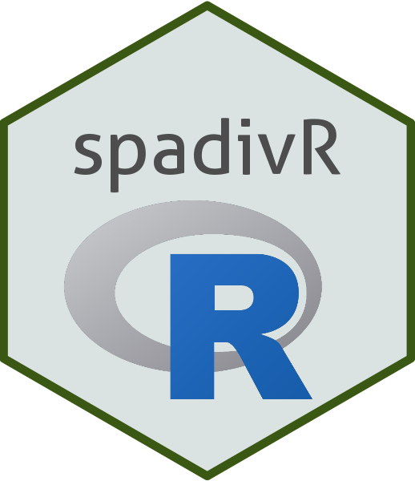
Análises espaciais da biodiversidade
Maurício Vancine
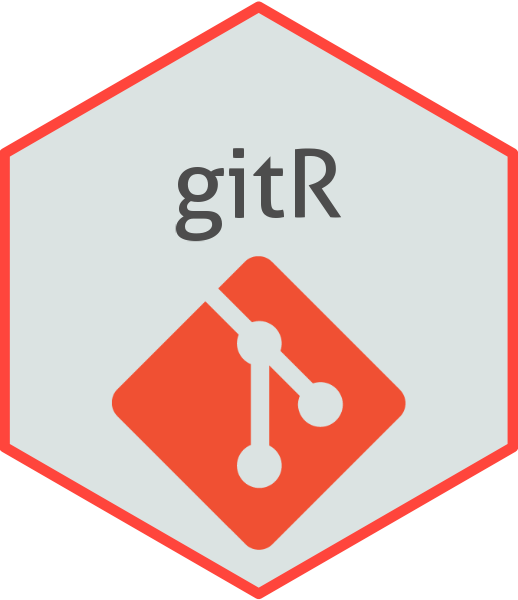
Controle de versão com git, GitHub e RStudio
Maurício Vancine
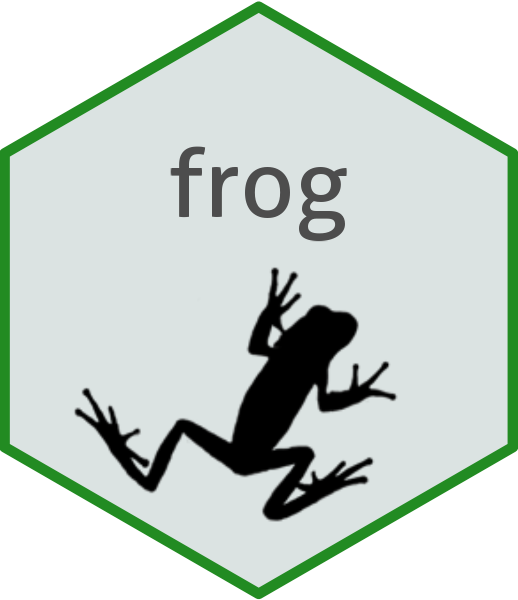
Curso de campo de anfíbios
Maurício Vancine
Geoprocessamento com QGIS
Maurício Vancine
Introdução ao Google Earth Engine
Maurício Vancine
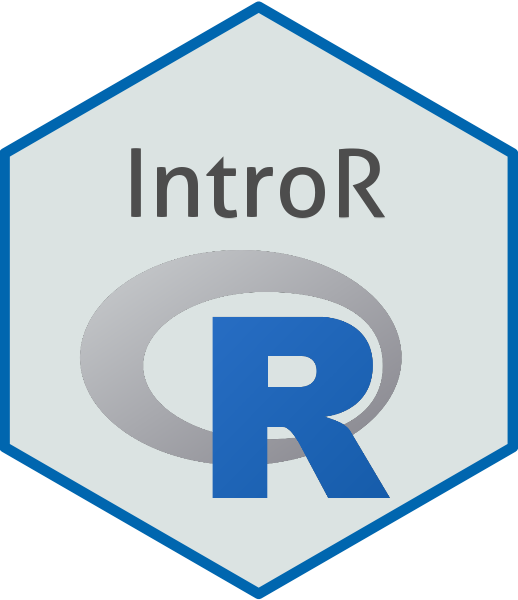
Introdução à linguagem R
Maurício Vancine
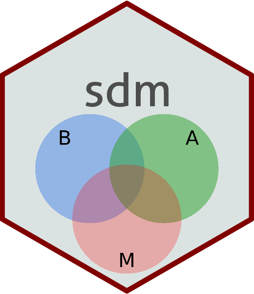
Modelagem de distribuição de espécies com o R
Maurício Vancine
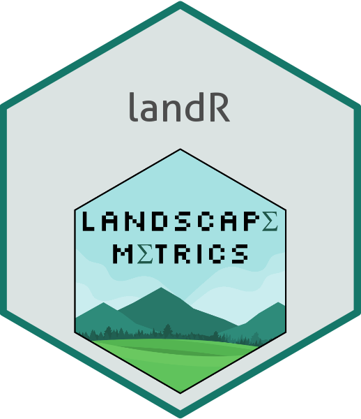
Métricas de paisagem no R
Maurício Vancine
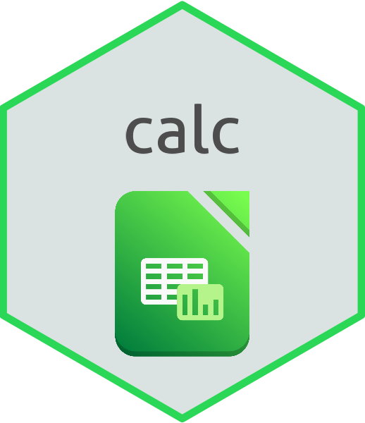
Organização de dados em planilhas eletrônicas - Calc - LibreOffice
Maurício Vancine
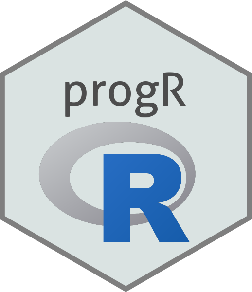
Programação em linguagem R
Maurício Vancine
ecostatR: análise estatística de dados no R
Maurício Vancine
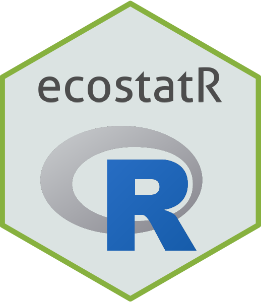
ecostatR: ecologia estatística no R
Maurício Vancine
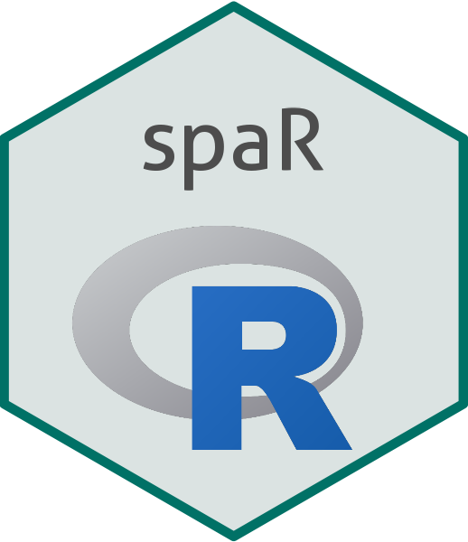
espR: ecologia espacial no R
Maurício Vancine
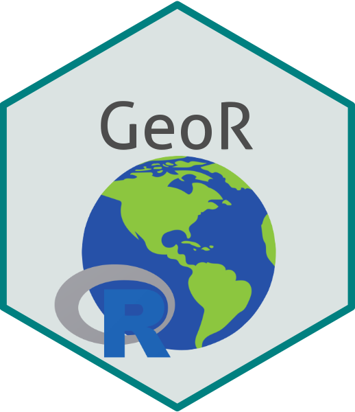
geoR: geoprocessamento no R
Maurício Vancine
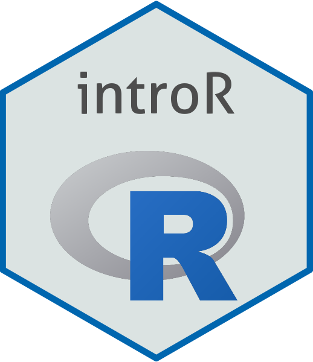
introR: introdução à linguagem R
Maurício Vancine
sdmR: modelagem de distribuição de espécies no R
Maurício Vancine
Sem itens correspondentes
↑ Topo